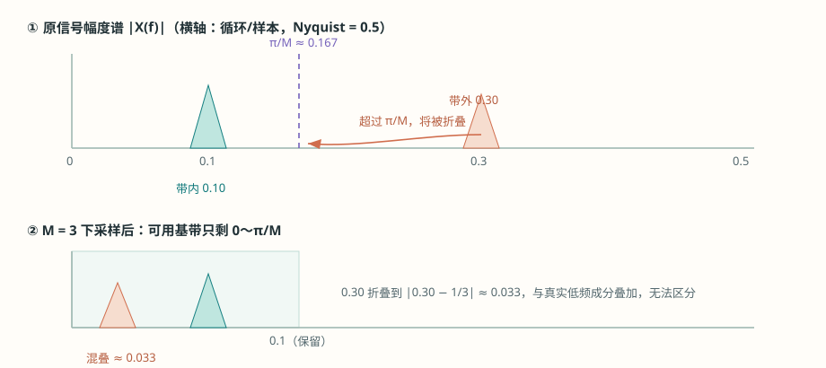
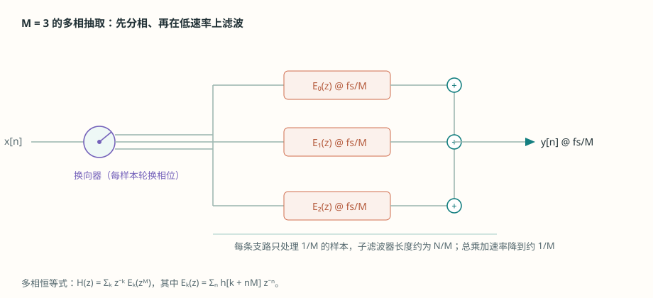

Signal · System · Insight / 12
多速率信号处理：在同一套样本上切换采样率
抽取、内插与多相分解，把“计算量随采样率增长”这件事变成可控的工程变量。
为什么要在信号链里主动改变采样率？
考虑一个软件无线电接收机：ADC 以 122.88 MHz 采样，而真正要解调的基带信道只有几 kHz 宽。如果整个后续处理都跑在原始采样率上，绝大部分计算都在处理噪声与邻道。此时最有价值的操作不是“设计更聪明的滤波器”，而是尽早把采样率降下来，让滤波、抽取、解调都跑在更低的速率上。
多速率信号处理解决的就是这件事：用抽取降采样率、用内插升采样率，并用多相分解把滤波代价从高速率搬到低速率。它在 SDR、音频重采样、通信与传感器融合中是标配。代价是：一旦操作不当，降采样的混叠或升采样的镜像会直接污染信号，而且这种污染在时域上看不出异常，只能从频谱上发现。
抽取：先滤波，再下采样
M 倍下采样（downsampling）就是每 M 个样本保留一个：
式（1）：M 为正整数；下采样本身不会自动限制带宽。
它的频域效果是把原频谱展宽 M 倍并叠加移位副本：
式（2）：副本间距为 2π/M；落在新 Nyquist 之外的分量会折叠回来。
如果信号含有高于 的频率分量，它们就会折叠到低频，产生混叠——听起来像是多了一个“假信号”。所以真正的抽取系统必须在下采样之前接一个截止频率为 π/M 的抗混叠低通：
x[n] → [抗混叠 LPF：截止 π/M] → [↓M 下采样] → y[n]
(fs) (fs) (fs/M)
注意区分两个词：下采样（downsampling）只是抽取；抽取（decimation）通常指“抗混叠滤波＋下采样”的整体。仅写下采样不等于抽取。
内插：补零不增加信息
L 倍上采样（upsampling）在样本之间插入 L−1 个零：
式（3）：上采样后采样率变为 L·fs，但总样本能量不变（大部分是零）。
补零的频域效果是压缩频谱并产生 L−1 个镜像：
式（4）：周期从 2π 缩短到 2π/L，因此 [0,2π) 内出现 L 个重复副本。
去掉镜像是内插滤波器（抗镜像低通）的任务，截止频率 π/L。它把那些零“填成”合理的中间值。这里没有新信息产生——内插只是用先验的带限假设把信号平滑地插回连续波形的一个近似。
还有一个常见误解：多相内插 y[m]=x[m/L] 后直接取输出并不会“恢复”波形，它只是把同一频谱重复了 L 次。内插器好不好，本质上取决于这个低通滤波器好不好。
有理数转换与 Noble 恒等式
非整数倍的重采样（如 44.1 kHz → 48 kHz）可以写成有理数比 L/M：先内插 L 倍，再抽取 M 倍，中间的滤波器可以合并为一个低通：
式（5）：44.1 kHz → 48 kHz 可取 L=160、M=147，因为 44100×160 = 48000×147。
直接在 7.056 MHz 中间速率上跑一个上千阶 FIR 代价巨大，所以实际实现会把滤波器拆成多相分量，在低速率上分相执行。
Noble 恒等式给出两条可以“搬动滤波器”的等价关系（名字来自 Noble，不是诺贝尔奖）：
抽取侧： [H(z)] → [↓M] ≡ [↓M] → [H(z^M)]
内插侧： [↑L] → [H(z)] ≡ [H(z^L)] → [↑L]直观含义是：滤波与速率转换的先后顺序在特定条件下可交换。把滤波搬到低速率一侧意味着滤波器只需在 fs/M 的速率上运行，计算量自然下降。代价是滤波器变成多相形式，需要多相分解来真正实现这个降速（下一节）。
多相分解：把滤波搬到低速率
多相分解把一个 FIR 滤波器按下标模 M 分组，构成 M 个子滤波器。设 h[n] 长度为 N，定义第 k 个多相分量：
式（6）：k = 0,1,…,M−1；每个子滤波器的长度约为 N/M。
它们拼回原滤波器的方式是：
式（7）：这就是多相恒等式；它精确等于原始 H(z)。
结合 Noble 恒等式，抽取可以写成：把输入按相位拆成 M 路，每路用 E_k 在 fs/M 速率上滤波，再加起来。子滤波器长度约为 N/M、运行在 fs/M，于是每输出样本的乘加数仍约为 N，但输出速率是 fs/M，总计算量降到原来的 1/M。

教学示意（算术推导）：若一个 256 阶 FIR 做 10 倍抽取，直接结构每输入样本做 256 次乘加；多相结构每个子滤波器约 25.6 阶、工作在 fs/10，总乘加速率约为 256·(fs/10) = 25.6·fs，相当于减少约 90%。这是基于阶数与速率的一阶估算，尚未计入流水线开销、系数存储与边界处理。
交互：M 倍下采样的混叠
固定一个双频测试信号：带内分量 0.10 循环/样本，带外分量 0.30 循环/样本。改变下采样因子 M，观察带外分量在没有滤波时如何折叠回基带。
可交互实验：下采样带来的混叠
赭色：未滤波直接下采样；青色：先过截止 π/M 的 31 阶 Hamming 低通再下采样。横轴为下采样后的归一化频率（0–0.5）。
两条曲线在低频处重合（带内分量不受影响），差异恰好出现在带外分量的折叠位置——这正是抗混叠滤波在消除的“不可区分成分”。
def downsample(x, M):
return x[::M]
x = [1.0, 0.0, -1.0, 0.0, 1.0, 0.0, -1.0, 0.0] # 0.25 循环/样本
assert downsample(x, 2) == [1.0, -1.0, 1.0, -1.0]
# M=2 后新 Nyquist 为 0.25，0.25 循环/样本正好落在边界上
print(len(x), len(downsample(x, 2)))完整可运行测试（12_multirate.py）用标准库验证了：下采样是均匀抽取、上采样后除 L 的倍数外全为零，且带外分量在 M 倍下采样后确实落到计算的混叠频率上。
多速率的边界
- 下采样本身不限制带宽；没有前置抗混叠低通就一定会发生混叠。
- 上采样不产生新信息，它只产生镜像；必须随后接抗镜像低通。
- L/M 转换的中间速率可达 fs·L，滤波器阶数与数值动态范围需单独评估。
- Noble 恒等式交换顺序时，滤波器从 H(z) 变为 H(z^M) 或 H(z^L)，实现必须相应地写成多相形式。
- 多相降低的是滤波的计算位置（速率），不是把总乘加数变成 1/M 的任意常数；真实收益受边界、流水线与存储影响。
自检：一个位于 0.30 循环/样本的分量，在 M=3 下采样后会混叠到哪个频率（在原始归一化轴上）？如果先过一个截止 π/3 的理想低通，它应该被保留还是被抑制？
参考资料与接口
- MIT OCW · Discrete-Time Signal Processing：下采样/上采样频谱、Noble 恒等式与多相分解。
- SciPy · resample_poly：基于多相滤波的有理数重采样接口。
- SciPy · decimate：带抗混叠滤波的抽取接口。